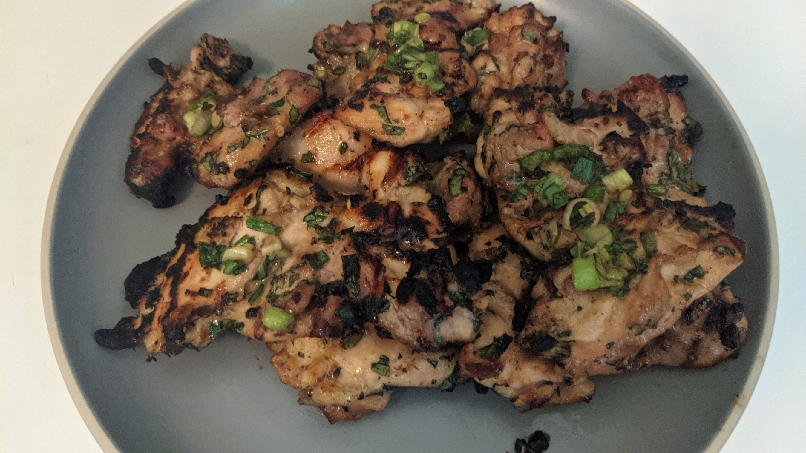
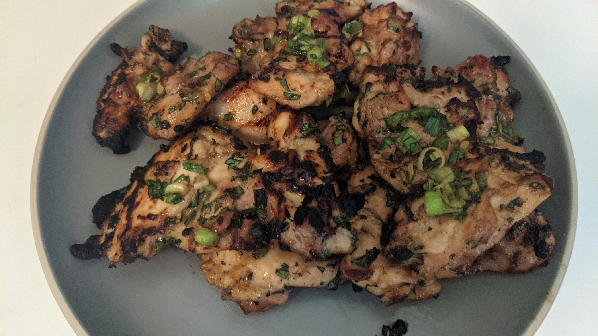

Amanda Harsy, PhD
I am an Associate Professor of Mathematics at Lewis University.

Mathematics Professor
- Website: www.cs.lewisu.edu/~harsyram
- Phone: 815-836-5688
- Email: harsyram@lewisu.edu
- Office: AS124-A
- Education: Mathematics, Phd
- Mailing Address:
Lewis University
One University Parkway, Unit #298
Romeoville, IL 60446-2200, USA
About Me

Education
- Ph.D in Mathematics, IUPUI, 2014 Dissertation: Locally Compact Property A Groups
- M.S. in Mathematics, IUPUI, 2011 Thesis Title: Amenable Groups
- M.A. in Mathematics, University of Kentucky, 2009
- B.A. in Mathematics, Coaching Certificate, Magna Cum Laude, Taylor University, 2007
Personal
I grew up in Chesterton, Indiana and got my B.A. in Mathematics at Taylor University. I also played soccer at Taylor. After Taylor, I went and got my Master's in Mathematics at University of Kentucky. I then went on to get my PhD in Mathematics at IUPUI. During this time, I also taught classes for Butler University and online classes at IU East. I reside in Lockport, Illinois with my husband, Benjamin, my daughter, Soraya, and my two darling kitties Eva and Archer.


Curriculum Vitae
Here is a link to my full curriculum vitae
Highlights and Honors
- 2018 Illinois Section of the MAA’s 2018 Early Career Teaching Award.
- Selected to run 2023 Summer@ICERM Program
- MAA Sports SIGMAA’s Outstanding Achievement in Advising and Promoting Research in Mathematics and Sports.
- Mentored over 35 students on original research projects which has resulted over 30 presentations at national and regional conferences.
- 2021-2022 CURM Minigrant
Selected Invited Presentations
- "Wouldn't It Be Nice" INMAA Invited Keynote/Plenary Speaker, 2020.
- "Designing Optimal Strategies for DNA Self-Assembly" ISMAA Invited Keynote/Plenary Speaker, 2019.
- "Using Graph Theoretical Designs of Self Assembling DNA to Motivate Undergraduate Research." Invited co-presenter, AMS Special Session on Research in Graph Theory and Combinatorics JMM 2020
- "Designing and Running a Data Science Program at a Regional Liberal Arts University." Invited co-presenter, SIAM Minisymposium on Data Science in the Mathematics Curriculum. JMM 2018
- "Incorporating Applications into Linear Algebra Courses." Invited co-presenter, NSF funded 20218 workshop, “National Pedagogical Initiatives on Linear Algebra”
Appointments
- Director of Mathematics, Lewis University, 2016-Present
- Associate Professor of Mathematics, Lewis University, 2020-Present
- Assistant Professor of Mathematics, Lewis University, 2014-2020
- Adjunct Instructor of Mathematics, Butler University, 2013-2014
- Online Instructor of Mathematics, IU-East, 2012-2014
Selected Publications
- Teaching Probability Using Dice and Risk. (2021) Book Chapter of Teaching Mathematics Through Games Classroom Resources Series, Volume: 65. American Mathematical Society
- Counting Your Winnings at the Casino. (2021) Book Chapter of Teaching Mathematics Through Games Classroom Resources Series, Volume: 65. American Mathematical Society
- Comparing Mastery-based Testing with Traditional Testing in Calculus II. (2020) International Journal of Scholarship of Teaching & Learning.
- Analysis of Passing Networks in Soccer. (2020) Mathematics and Sports Journal.
- An Analysis of the Impact of Mastery-based Testing in Mathematics Courses. (2020) PRIMUS.
- Variations in Mastery-based Testing. (2019) PRIMUS
- Mastery-Based Testing in Undergraduate Mathematics Courses. (2018) PRIMUS.
- Analyzing the Impact of Active Learning in General Education Mathematics Courses. (2020) Association of Christians in the Mathematical Sciences 2019 Conference Proceedings
- Start a Math Teacher Circle: Connect K-12 Teachers with Engaging, Approachable, and Meaningful Mathematical Problems (2018) Association of Christians in the Mathematical Sciences 2017 Conference Proceedings.
Selected Panels, Workshops, and Minicourse Leader
- "Beyond Traditional Grading Schemes: Mastery Based Grading." Joint-minicourse presenter, 2019 MAA Mathfest, 2021 MAA Virtual Programming
- "New to Mastery Grading" Workshop Co-Leader at the 2019 NIBLT Conference.
- Inspired by Real, Fun Math: Practical Outreach for Sharing the Power and Beauty of Mathematics with our Communities." Project NExT invited panelist, JMM 2020
- "Getting Your Feet Wet in Mathematics Education Research. " Project NExT invited panelist, 2019 MAA Mathfest
- "Using Data Applications to Inspire Linear Algebra Topics in the Classroom." Joint-minicourse presenter, JMM 2019
- "The Job Search" Invited Presenter, 2019 ACMS Conference
Student Resources
I love being able to help students in anyway that I can! Please stop by my office to get advice about the mathematics major, graduate school, research, attending conferences, or just to chat about cats! This page is meant to give students some resources to help them excel during their time at Lewis! I try to do what I can to help students at Lewis! Sometimes I get repaid with a "Pi" in the face!
Math Honor Societies
If you want to learn more about whether you are eligible to join Pi Mu Epsilon or Kappa Mu Epsilon, please email Dr. Harsy at harsyram ''at'' lewisu ''dot'' edu.
Add a Math Major/Minor
Looking for information about The Lewis Mathematics Major/Minor? Please go here.
Math Careers
Looking for information about Math Careers? Math is a versatile and marketable field of study! Check out this great website! or go to http://weusemath.org/ or check out this video!

What is Mathematics? What is Mathematics Research?
When I say that I enjoyed math, I don’t mean that I was one of those kids who delighted in adding and multiplying any numbers that I came across or who memorized many digits of pi (what comes after 3.14?), or who liked to participate in quick-fire math contests. What I mean is that I enjoyed the creativity, the logic, the reasoning and the truth that is mathematics.

Dr. Suzanne L. Weekes
Mathematics Professor
Unfortunately, many people have the mistaken idea that math is just a set of rules and calculations. That is not mathematics. You could be working at the Disney Research Group using math to create realistic-looking hair in the movie Moana, you could be designing a new method for Netflix to determine what movies a subscriber would like, or you could even be working on an abstract math problem that uncovers new results, such as finding a fast algorithm to determine whether or not a number is prime. That is how I see math and why I love it. To me, mathematics is beautiful.

Dr. Michael Dorff
Mathematics Professor and Past-MAA President
If you think about the history of science, mathematics sits in a unique position: everything that has ever been true in mathematics is still true!

Dr. Carl Cowen
Mathematics Professor and Past-MAA President
Research
My dissertation work was done in geometric group theory which involves a little bit of analysis, algebra, and topology. In particular, I looked into generalizing Yu's Property A. I worked on Sylow Group theory at University of Kentucky and in general enjoy problems that can be explored with undergraduates. As a faculty member at Lewis, I have enjoyed including undergraduate students in independent studies and research projects. I have worked with over 35 students on projects involving math education, linear algebra, statistics, and data science. If you are a Lewis student interested in undergraduate research, please feel free to contact me. Often students will present their research at regional and national conferences!

[Research] is like being lost in a jungle and trying to use all the knowledge that you can gather to come up with some new tricks -and with some luck you might find a way out.

Dr. Maryam Mirzakhani
Mathematician and Fields Medalist
Undergradaute Research Projects:
Project 1: Applying Linear Algebra to Sports Analytics
Ranking sports teams can be a challenging task and using straight win percentage can be misleading at times.
Among the many mathematically inspired sports ranking systems, linear algebra methods like Markov Chains and the Massey and Colley methods are among the most elegant
and simple. Both involve setting up and solving a matrix system. While at their most basic level, these methods are
useful for sports rankings, unfortunately, they are not particularly strong at predicting future outcomes of games.
One way to improve these methods for ranking and predicting future outcomes is by introducing weights to these systems. This research
involves collecting sports data, and adding and testing features and weights to modified linear algebra and probability-based models. This research also often involves
writing programs to construct huge systems of equations, so some programming experience is helpful, but by no means necessary.
Background Needed: This research involves linear algebra, programming, and some data analytics and is appropriate for students who have taken
Linear Algebra and have some programming background.
Project 2: Determining Optimal Strategies for DNA Self-Assembly Using Tile-Based Assembly and Graphs
Motivated by the discovery of new laboratory techniques, formal graph theory has recently become useful
in the study of self-assembling DNA complexes. Construction methods developed with concepts from undergraduate level
graph theory have resulted in significantly increased efficiency. One recent focus in DNA nanotechnology is the formation
of nanotubes using lattice structures. These nanotubes are thought to have wide-ranging potential, such as containers
for the transport and release of nano-cargos, as templates for the controlled growth of nano-objects, and in
drug-delivery methods. Rules governing the structure of these nanotubes are not yet well understood, and this naturally
offers open problems in the realm of applied graph theory.
Background Needed: This research can be introduced to students with little mathematical background. It involves basic graph theory
(Eulerian graphs, trees, paths, cycles, etc.) and depending on the student's
background and interests may also involve programming, computer graphics, art, biology, and geometry.
Project 3: Mastery-based Testing SoTL/Educational Research
As educators, it is important to recognize that our assessment methods affect student attitudes. If we
want students to learn from their mistakes and counteract a fixed-mindset of learning, perhaps we should look
at what we incentivize in the classroom. One way that professors are attempting to counteract math anxiety,
poor STEM retention, and a fixed-mindset of learning is through using and researching a new assessment model
called "mastery-based testing" (MBT). In MBT, students are given problems in which they can only receive full
credit for the problem after they demonstrate mastery of the concept being tested. Each test includes similar
questions over the same concepts from previous tests which allows students who have not mastered an idea to retest
and reevaluate old concepts. In this research we analyze qualitative and quantitative data from
classes using MBT and compare it to classes using traditional assessment.
Background Needed: This research involves some statistical analysis and data analytics and is appropriate for students who have taken
a statistics class (preferably Applied Probability and Statistics). Students involved in this research must complete
an online CITI training which provides foundational training in human subjects research and includes the historical
development of human subject protections, ethical issues, and current regulatory and guidance information.
 

Teaching
"It is the supreme art of the teacher to awaken joy in creative expression and knowledge." - Albert Einstein

I am extremely fortunate. I grew up with parents who loved me and loved math, hopefully in that order. I remember working on homework with my dad, an electrical engineer, and how excited he was to discuss the cool and interesting aspects of calculus with me. At the time, I was more focused on ''getting the right answer'', but my dad was the first one to show me the beauty and creativity that is mathematics. I also have had many amazing, enthusiastic math teachers throughout my years in school who have inspired me to do what they do. Their approach to teaching mathematics made their classes interesting, challenging, and fun by using activities rather than didactic lecturing. My favorite teacher in high school would say, ''we are in school to learn to think creatively and logically'', and as I progress in my career as a mathematics educator, I have adopted his mantra. Learning to think creatively and logically is more than a grade, it is a life skill that will help students be successful in whatever they choose to be in the future, from engineer to economist! This is my mission as a teacher, to enable my students to process the world around them in a creative and logical manner. I believe this mission is closely aligned with Lewis' Lasallian mission especially regarding the pursuit of lifelong learning skills through creative and critical interactions. I also think that, as educators, we need to question how our methods affect student attitudes toward mathematics. Specifically, I want my teaching to instill a growth-mindset of learning. That is, I want to emphasize that learning is not based on the amount of intelligence possessed by a student, but that understanding can be developed through effort and motivation. These goals as an educator have shaped how I teach, how I serve, and how I approach research.
Pedagogical and Service Projects:
I have also been very active in scholarly activities beyond these areas and am involved in projects related to pedagogy, K-12 teacher professional development, and graduate student mentorship. In 2018, I was one of 28 professors invited to present and participate in an NSF funded workshop, National Pedagogical Initiatives on Linear Algebra, at the University of Oklahoma. This group is working to update the current Mathematical Association of America’s pedagogical recommendations for teaching linear algebra. I led a session on "Incorporating Applications into Linear Algebra Courses" with my collaborator Dr. Marie Snipes of Kenyan College and the ImageMath group. I have also worked with ACMS Gold ’14 Project NExT faculty members organizing job search workshops for graduate students. I have been the main organizer for these workshops and have presented our collaborative work at two ACMS conferences and at the Indiana MAA Sectional Meetings. As part of the Southwest Chicago Math Teachers’ group, I also regularly present sessions at our meetings. These sessions involve creating an interactive activity that delves into interesting mathematics. This contributes to the advancement of learning for K-college students and faculty. Some of the sessions I have run include exploring binary number tricks with liar’s bingo, modeling polynomial division using exploding dots, analyzing the “fairness” of voting schemes, and exploring mathematics of the game Prime Climb. I have been the invited speaker at Dordt University’s Math Teachers’ Circle Kick-off Event and for the 2020 Virtual Math Teachers' Circle Summer Workshop hosted by AIM.I also have been recognized as someone with experience with Data Science both with my sports modeling research and from working with Dr. Piotr Szczurek. I was invited to give a presentation about our data science program at the 2018 JMM SIAM Mini-symposium on Data Science in the Mathematics Curriculum. I also served as an external program reviewer a university's undergraduate program in data science.
Service and Outreach
During my time as a mathematician, I have enjoyed many opportunities to serve my department, college, university, and community.
Math Community Service Highlights
- Southwest Chicago Math Teachers’ Circle Leadership Team, Founding Member, 2016-present
- ISMAA Program Committee Co-Chair for 2021 and 2022 ISMAA Conferences
- MAA Sports SIGMAA Secretary-Treasurer, 2019-2021
- ISMAA Director for Private Colleges, 2019-2022
- Association of Colleges in the Chicago Area Mathematics Division Chair, 2020, 2021
- ISMAA Awards Committee, 2019, 2020
- MAA Sports SIGMAA Nominating Committee, 2018-2019
Camps/Workshops
- 2018 Mathematics Camp, free camp for middle schoolers
- 2016 Mathematics and Design Camp, free camp for middle schoolers
- Math Teachers’ Circle Workshops, 2016 and 2017
- IMSA Math Camp, 2016
- Girls Create with Technology 3D Printing Session, 2016
- C.A.T.S Program (Computer and Technology Scholars), taught programming to female 5th-8th graders, 2014, 2015
Events Organized
- ACCA Math Talks, Fall 2020, Spring 2021
- PUMA STEM Speaker Series, Fall 2020, Spring 2021
- Noyce, PUMA STEM Growth Mindset Workshop, Spring 2021
- MAA Mathfest Paper Session on Formative Assessment Techniques for Undergraduate Math Courses, 2016
- JMM Project NExT Panel Session on Scholarship of Teaching and Learning, 2015
- Northern IL NCWIT Aspirations in Computing Award Ceremony, 2016
Mentoring
- LSAMP PUMA STEM co-faculty Grant Coordinator, Faculty Mentor, 2018-present
- Mentor for MAA Early Career Mathematicians, 2019-present
- Mentor for Project NExT, 2021-present
- ACMS Mentor, 2015-present
- Faculty Mentor for Math Alliance Group, 2018-present
- MAA Great Talks Faculty Mentor, MathFest 2019, 2018
- Lewis University Celebration of Scholarship Mentor for over 25 different projects
Selected University Service
- Chaired 3 Mathematics Search Committees
- Chair of College Educational Policty Committee (2020-21), voting member 2014-2021
- Math Study Tables Coordinator, 2014-present
- Lasallian Scholarship Interviewers, 2016-present
- Celebration of Scholarship Poster Judge: 2014-present
- Faculty Advisor for Lewis Math Club, 2015-19
- Served on over 13 different committees including Faculty Affairs, Graduate Council, Library Advisory, Assessment, Gender Equity, and the Noyce Scholarship Grant Steering Committee
Other Service
- JMM Undergraduate Poster Judge, 2015-2021
- Young Mathematicians Conference Undergraduate Research Judge 2014-2017
- Reviewer for PRIMUS, Journal of Math Circles, The Mathematics Enthusiast
- Project NExT Gold '14 Fundraising co-chair, 2020

I have done several outreach projects including a free Math Camp in which students learned about graph theory, probability, and 3D printing!
At the end of the week, students created their own games and 3D printed their own game pieces using what they learned during the week. I have also served the local community by running local math camps at IMSA and helping with DataThon and Girls' Create with Technology. Girls Create
with Technology is designed to engage girls in computer science and STEM activities. Girls participating in the program will receive advanced
training in various aspects of Computer Science from Lewis University faculty and students.
I am also a part of the leadership team for the
the Southwest Chicago Math Teachers' Circle!
This Math Circle provides the opportunity for 5th -12th grade math teachers and local college professors to collaborate
on developing and refining the problem-solving skills of local teachers and students. This community of learners provides math
instructors a supportive network to discuss mathematical and pedagogical issues that arise in the classroom and gives teachers
support and resources to initiate more student-centered, inquiry-based pedagogies in their classrooms. I have also found that
this math circle helps teachers rekindle their enjoyment of solving interesting and challenging math problems in a supportive
group environment. To get this program started, I recruited teachers from St. Xavier University, Trinity Christian College,
University of St. Francis, College of DuPage, St. Bede the Venerable Elementary School, and Taft Elementary to help serve
on our leadership team. I have also served as the faculty advisor for the Lewis Math Club!
As the faculty sponsor for the Lewis Math Club, I work closely with the club's officers to help them run events
like the annual Math Careers Panel, Pi-Day, Meet an Actuary, Math Bash,
canned food drives, poker nights, and more. I have also taken over 30 majors to local conferences and ACCA events.


Course Materials
Forgot your binder? Don't worry, I have you covered. Below are past Lecture Note Workbooks for some of my courses: Note these are all still works in progress, so they may not have all the kinks worked out! If you are another professor and would like to see scanned notes or homework keys for some of these courses, please email me at harsyram 'at' lewisu 'dot' edu. Hope you find these helpful!
Linear Algebra*
Lecture Outlines
Homework
Labs
Calculus II
Calculus II Notes
and Videos
Calculus III
Calculus III Notes
and Videos
Real Analysis
Real Analysis I Notes
Real Analysis II Notes
Graph Theory/Combinatorics
Applied Combinatorics and
Graph Theory Notes
*(Updated 2020, scanned notes available, YouTube Lectures Available for all topics. Note: Uses ImageMath and IOLA Math Resources!)
Please email me if you have any questions or want more information or if you see anything not working on this site: harsyram 'at' lewisu 'dot' edu